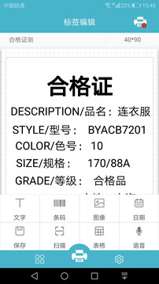

手机连蓝牙打标签——我用佳博 Gprinter 跑了三天的真实感受
小微商户贴价签补货的日常场景里，电脑端排版太笨重、打印机按键效率太低。Gprinter 把排版搬到手机上到底是不是伪命题？三天下来说说我的体验。
上周帮朋友去他新开的水果店理货，货架上一排排待贴价签的水果筐，他蹲在那手动按打印机按键输条码，按得手都快抽筋了。我说你这不行，得用手机打——掏出手机从Gprinter官网装了这个App，蓝牙连上他那台佳博小标签机，五分钟贴完了一整排。他眼睛都直了：这玩意儿我之前以为是什么高大上的东西。
说实话我之前也对手机端打印工具没抱太大期望，总觉得手机屏幕小、排版麻烦、功能阉割，就是个凑数的 App。但这次为了帮朋友，真装下来用了三天，从第一次连打印机到批量出模板、扫条码打商品，踩了几个坑也摸出了门道。今天就老老实实说一下真实体验，有好有坏。
初印象：三分钟连好打印机，界面比想象中清爽
从官方下载装好打开，欢迎页直接甩给你两个选项：连打印机、或进模板库。没有注册门槛也没有弹窗广告，第一印象分就加上去了。点"连打印机"，蓝牙开着自动扫描，十来秒就把朋友的 GP-2120 抓出来了，点一下就配上了——比我之前连过的某些蓝牙设备要快得多。

进编辑界面之后，画布直接就是标签纸的样子，底部一排控件：文本、条码、图片、几何图形、扫码录入。手指拖拽就能放位置，双击弹出属性面板改字号、改编码类型、改格式。没有图层菜单、没有坐标输入框，纯手势操作。说实话一开始有点不适应，毕竟我习惯了电脑上拖动对齐的精准度，但用了十分钟之后就觉得：它就是故意这样设计的——目标用户是店员和小老板，不是设计师，不需要调坐标对齐到像素。
实际用下来：三个功能真的省时间
模板库：选一个就能用，这是最大的杀招
朋友那台机器之前打价签都是从电脑端导模板，每次换尺寸都要重做。Gprinter 的模板库是真的香——进云端模板库，选"食品/零售"分类再选"价格标签"，唰地出来二十来个现成的，有水果价签、奶茶杯贴、散装食品标签，选一个下载到本地，改几个字就能打。我找了个看着最顺眼的水果价签模板，把店名改成朋友的，价格区改成他常用的格式，直接开打。
这一步如果是电脑端，得先找模板源文件，打开排版软件，加载模板，改文字，保存，再发到打印机——至少多十倍的操作步骤。

商品库扫码：一次录入，以后全是秒级
第二天朋友跟我说他店里还有八十多个商品要录入，手动填会累死。我给他指了商品库功能：打开"我的"→"商品库"→"+添加商品"，可以手动一条条加，也可以用 Excel 批量导入。他刚好有一份供应商给的商品清单 Excel，导进去之后八十多条全进去了——字段名对应自动匹配，名字、条码、规格、价格全齐。
然后高潮来了：打价签的时候调起"商品库扫码"，对着水果筐上的条码一扫，Gprinter 自动在商品库里匹配，条码、商品名、规格、价格"啪"一下全填到模板里，直接点打印。朋友扫一条按一下打印，速度快得手都跟不上。之前他手动输一个条码要按十几次按键，现在扫码一秒、确认两秒、打印出纸——一个循环不到十秒。
扫到商品库里没有的条码？APP 会弹提示，点"添加到商品库"当场补录，下次再扫就直接调出来了。我让他养成补录的习惯，三天下来商品库已经覆盖了百分之九十的 SKU，补货打价签基本就是流水线。
打印参数：调对一次管半年，调不对浪费一卷纸
这个踩了坑必须说。朋友一开始打印浓度开得太高，打出来的条码糊成一团，扫不出来。我去Gprinter文档翻了下浓度档位怎么调，佳博的标签机推荐 7~8 档，小票机 6~7 档，冬天环境温度低浓度要调高 1~2 档，夏天调低。朋友那台标签机之前是默认值，浓度 5，打印出来的条码边缘虚，扫得断断续续。调到 8 之后立刻清晰了——每一个黑条都利利落落，手机一扫秒出结果。
还有个细节：打条码的时候速度要调低，比如从 100mm/s 降到 75mm/s，速度快打印头停留时间短，浓度再高也容易糊。纯文字小票可以开快点省时间，带条码的必须慢。
两个地方有点别扭，也得提
图片和 Logo 的坑有点多
朋友想把店里的 logo 加到标签上，我从相册选了一张，结果导入之后背景变成白色，把后面的灰色分隔线盖住了。折腾半天发现是安卓系统导出 PNG 透明图的时候把 alpha 通道吃掉了，得用电脑先存成 PNG-24 格式再导入。还有图片太大的问题，他随手拍的商品实拍图 2MB 多，导进去 APP 直接卡了两秒，打出来和压缩到 300KB 的没区别——热敏打印头分辨率就 203dpi，超过 1MB 纯浪费。
只支持佳博打印机
这个是硬限制。朋友家里还有一台其他品牌的便携打印机，想试试用 Gprinter 打，结果搜不到设备。查了一下文档，Gprinter 走的是佳博的 ESC/POS 指令集，其他品牌不兼容。如果你手里是别的牌子打印机，这款 APP 直接 pass。
适合谁？直接给结论
强烈推荐给： 水果店、奶茶店、便利店、服装档口、小型仓储——每天要打几十到几百张标签、没有专人操作电脑端排版软件的场景。一台佳博标签机 + 一部安卓手机 + 商品库 + 模板库，这一套组合拳能把贴价签的效率至少翻三倍。店员不需要培训，扫一下打印一下，谁都能上手。
别浪费时间： 如果你手里是非佳博品牌的打印机、或者你需要矢量图级别的精细设计（比如连锁品牌的统一视觉标签）、或者你要做批量几百张的 ERP 对接——这些都不是 Gprinter 的主场，它不做也做不好。复杂的事留给电脑端，手机端就干手机端该干的活：现场、轻量、即打即用。
最后说个小事
第三天傍晚我们收摊的时候，朋友拿出手机给店里新来的兼职演示怎么打价签："就扫一下，按一下那个绿色的打印按钮，完事。"兼职小姑娘试了两下就熟练了，朋友跟我说："之前教我老婆用打印机按键教了一周没教会，这小姑娘看一遍就会。"
这可能就是手机端工具的真正价值吧——不是功能多强，是把一件需要学习成本的事，降到了看一眼就能上手的程度。佳博的这套资料在GitHub、Gitee和GitCode都能拿到，不管你是想直接下载现成的安装包，还是想研究下文档里的参数细节，都能找到入口。